The information hiding homepage
Photo database
It is important to test an image watermarking software on many different images and for fair comparison the same set of sample images should always be used. Pictures can be interesting from the signal processing point of view: textured/smooth areas, size, synthetic, with straight edges, sharp, blur, brightness/contrast, etc. They should also cover a broad range of contents and types. It is impossible to get an exhaustive list of classes of pictures and stock photo companies have a lot of difficulties to set up a satisfactory index. However one can at least retain the main themes that are common among these libraries and that are used very often in the press in order to keep a wide range of kind of pictures: colours, textures, patterns, shapes, lightning.
Some image databases already exist for image processing research. The USC-SIPI Image Database is an example of such database where one can find the ‘classics’: lena, baboon, peppers, etc. Using these databases for research on digital watermarking and indeed copyright protection is somewhat hypocritical as ‘some of the images in the database were scanned from copyrighted material’ and the ‘origin of many is unknown’. Consequently we tried to find a wide range of other photographs and got the authorisation to use them freely for research on watermarking (including publication in proceedings or journals) as long as credit is given to the photographer.
Terms of use
- Free for research purpose on image or signal processing and digital
watermarks evaluation, including:
- publication in conference proceedings;
- publication of research results on the Web.
- Restriction: any user of the image shall give credit to the copyright owner of the image. All the information regarding the said owner provided on this page shall be reproduced.
- Forbidden to use for: product promotion, advertisement or any commercial purpose.
Owner agreement
Here is a copy of the agreement that the owner of the pictures presented on this page signed:
I, <Name of the owner>, whose address is <Address of the owner>, certify that I own the copyright of the images shown underneath and agree to give them for research purpose to the Academic Research Community (image processing and digital watermarking) as long as credit is given to me:
- Free for research purpose on image or signal processing and digital watermarks evaluation, including publication in conference proceedings and publication of research results on the Web.
- The following courtesy message must appear each time my image(s) is/are used: <Copyright message>
- Forbidden to use for: product promotion, advertisement or any commercial purpose.
<Photos of the owner>
I understand that, since the above images will spread in the Research Community, I will not be able to change my mind on this agreement.
Signature and date:
<Signature of the owner>
Computer generated images
| 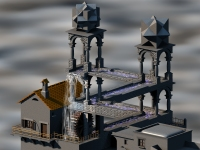 | Waterfall. Copyright image courtesy of
Sascha Ledinsky (sascha.l@usa.net). Second place winner at the Internet Raytracing Competition. |
| 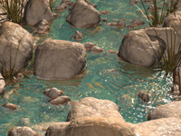 | Always running, never the same.... Copyright image courtesy of
Jaime Vives Piqueres
(jaime@ctav.es). First place winner at the Internet Raytracing Competition. |
| Pocket Watch on a Gold Chain. Copyright image courtesy of Kevin Odhner (jko@home.com) |
{kind=link}
Bright colours photos
| Wildflowers. Copyright photos courtesy of Robert E. Barber, Barber Nature Photography (REBarber@msn.com) | |
| 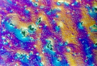 | Localised corrosion on an electropolished Al-Zn-Mg-Cu alloy. Copyright photo courtesy of Gérald Deshais. |
| Pills. Copyright photo courtesy of Karel de Gendre |
Reduced colour set & dark colours photos
| 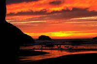 | Bandon beach. Copyright photo courtesy of Robert E. Barber, Barber Nature Photography (REBarber@msn.com) |
| 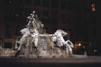 | Fontaine des Terreaux. Copyright photo courtesy of Éric Labouré |
| 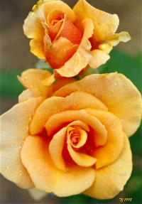 | Brandy rose. Copyright photo courtesy of Toni Lankerd |
| 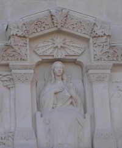 | Fourvière Cathedral, north wall. F. A. P. Petitcolas. |
Photos with textures & fine details
| 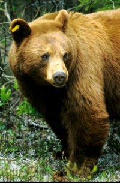 | Black Bear. Copyright photos courtesy of Robert E. Barber, Barber Nature Photography (REBarber@msn.com) |
| 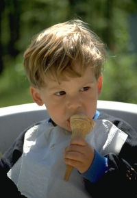 | Kid. Copyright photo courtesy of Karel de Gendre |
| 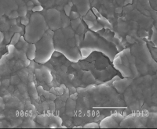 | Intergranular Stress Corrosion Cracking of an Al-Zn-Mg-Cu alloy. Gérald Deshais, Department of Materials Science & Metallurgy, University of Cambridge. |
 |
USC texture mosaic #1. Courtesy of the Signal and Image Processing Institute at the University of Southern California. |
| 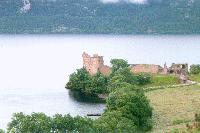 | Loch Ness. Copyright photo courtesy of Patrick Loo, University of Cambridge (patrickl@autonomy.com) |
Photos with lines & edges
| Paper machine. Copyright photo courtesy of Karel de Gendre | |
| 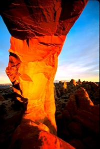 | Skyline Arch. Copyright photo courtesy of Robert E. Barber, Barber Nature Photography (REBarber@msn.com) |
| 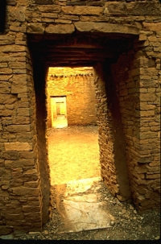 | Pueblo Bonito. Copyright photo courtesy of Robert E. Barber, Barber Nature Photography (REBarber@msn.com) |
| 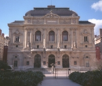 | Opera House of Lyon |
| F15. Copyright photo courtesy of Toni Lankerd | |
| 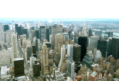 | New-York. Copyright photo courtesy of Patrick Loo, University of Cambridge (patrickl@autonomy.com) |
Photos with smooth areas
| 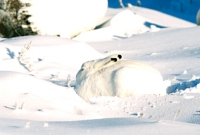 | Arctic Hare. Copyright photos courtesy of Robert E. Barber, Barber Nature Photography (REBarber@msn.com) |
Other photos
| 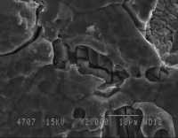 | Cleavage of Intermetallics and Hydrogen Embrittlement in an Al-Zn-Mg-Cu alloy. Gérald Deshais, Department of Materials Science & Metallurgy, University of Cambridge. |
Classics
These are the classic images that have been used for years in signal processing. The copyright status of these images in unclear but we provide them for completeness.
| 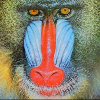 | Baboon. Courtesy of the Signal and Image Processing Institute at the University of Southern California. |
| F16. Courtesy of the Signal and Image Processing Institute at the University of Southern California. | |
| 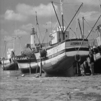 | Fishing boat. Courtesy of the Signal and Image Processing Institute at the University of Southern California. |
| 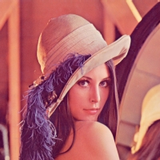 | Lena. Courtesy of the Signal and Image Processing Institute at the University of Southern California. |
| 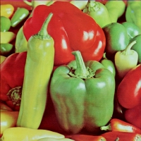 | Peppers. Courtesy of the Signal and Image Processing Institute at the University of Southern California. |
![[Download picture]](http://videoprocessing.ucsd.edu/~karl/krs_sr/images/3.2.25.tiff-BIC.JPG) |
Pentagon. Courtesy of the Signal and Image Processing Institute at the University of Southern California. |